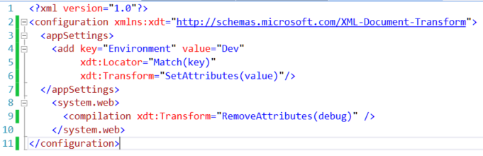
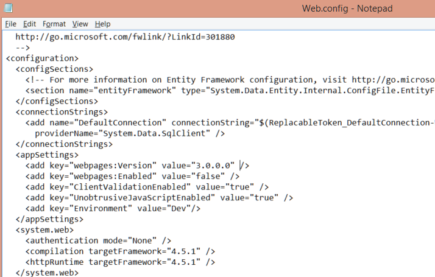
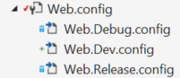
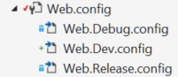

When you create a publish profile, you may notice that there is an option to replace the connection string on the Settings tab.
 You can specify a connection string there and it will (optionally) update the destination web.config.
You can specify a connection string there and it will (optionally) update the destination web.config.
But what if you have more than connection strings to change? What about
When you create a new web application, a web.config transforms is added for both default build configurations, Debug and Release.

We're going to add another transform that matches the publish profile we setup in that previous post. If you don't have a publish profile setup yet, check out my previous post
Step 1: Add a .config file.
<Edit>
There is an even easier way to do this. You can also select "Add Config Transform" from the context menu of the publish profile file (.pubxml file).
 </Edit>
</Edit>
Add a new item to your web project using the Project menu.
 Select "Web Configuration File" and name it "Web.
Select "Web Configuration File" and name it "Web.
Step 2: Complete the config transformation
You need to add the document transform namespace to your new config file. This goes on the configuration root element and will look like this. <configuration xmlns:xdt="http://schemas.microsoft.com/XML-Document-Transform">. With that complete, add the rest of your transformation. In my case, I want to remove the debug compilation attribute and change an appSetting.

Step 3: Validate/Publish
If you select your new config transform file and right-click to see the context menu, you'll see a "Preview Transform" option, which shows you exactly how this will be applied.

And because the transform name matches the publish profile, it will be applied during the publish. I published my site and opened the resulting web.config to confirm the changes. 
Extra Credit: Properly nested config transforms
<Edit> If you add your config transformations via the context menu option detailed in the edit above, this may already be done for you. It appears the Web Application Projects will nest the config, but Web Site Projects will not. </Edit>
This is totally unneccesary, but if you're like me, you'd rather the new config transform was nested under the main config with the other transforms.

To "fix" this, unload your web project and edit the proj file. Find your transform, which should look something like <Content include="Web.Dev.config" /> and add a child  Reload the application and you'll find it properly nested under the main file.

Much Better!
Reload the application and you'll find it properly nested under the main file.

Much Better!
Web Publish Series
- Config transformations
- Publishing Web Site Projects
- Automatic deployment with TFS Team Build
- Set up your web server for web deployment.
- Using publishsettings files to publish to Azure (and other hosting providers)